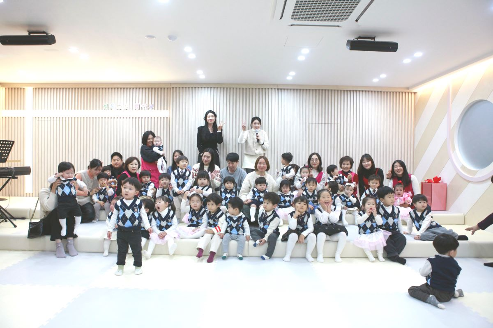
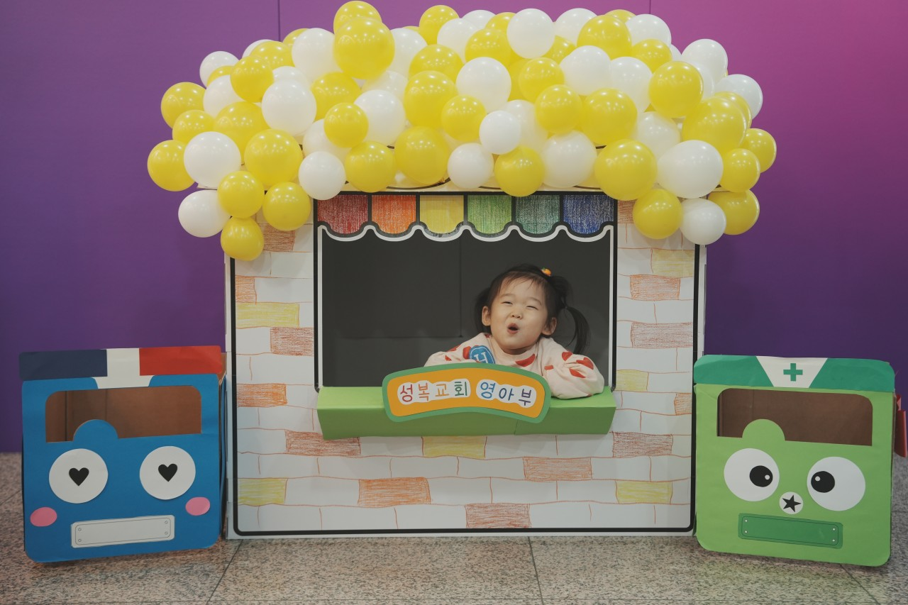

1세부터 4세까지의 영아에게 믿음의 씨앗을 심는 곳입니다
성복교회 영아부는 1세부터 4세까지의 영아들이 하나님의 사랑을 배우고 생애 첫 신앙의 씨앗을 심는 소중한 공간입니다. 찬양과 놀이를 통해 자연스럽게 하나님을 만나고, 사랑하는 선생님들과 함께 즐거운 예배 시간을 보냅니다.
영아부를 섬기며 어린 영혼들에게 하나님의 사랑을 전하고 있습니다. 한 명 한 명의 아이들이 하나님의 은혜 안에서 건강하게 자라나기를 소망하며, 부모님들과 함께 신앙 교육에 최선을 다하고 있습니다.


위치: 성복교회 본관 1층 사랑성전
찾아오시는 방법: 교회 정문으로 들어오시면 1층 왼쪽에 위치해 있습니다.
문의: 교회 사무실 02-1234-5678 (영아부)